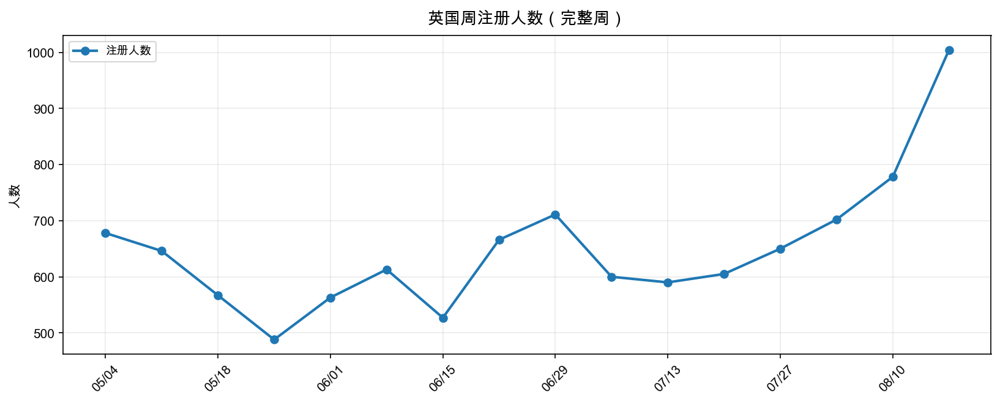
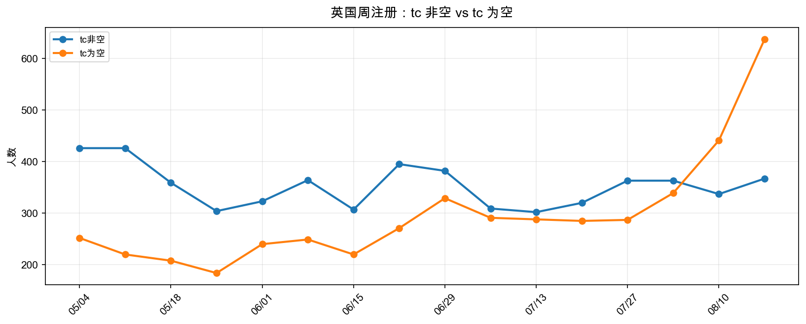
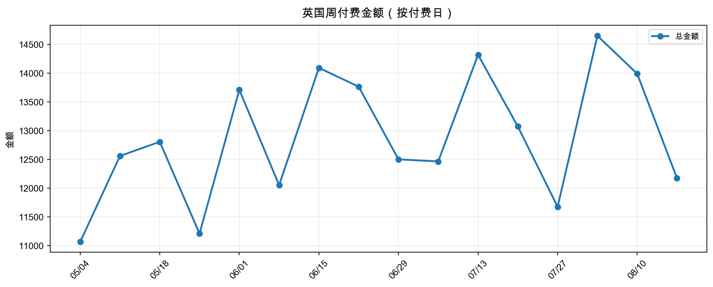
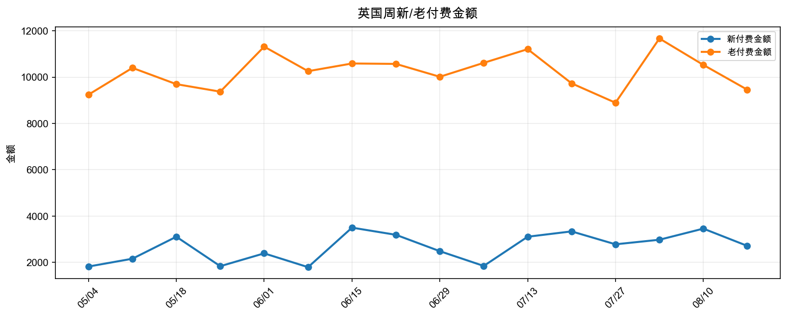
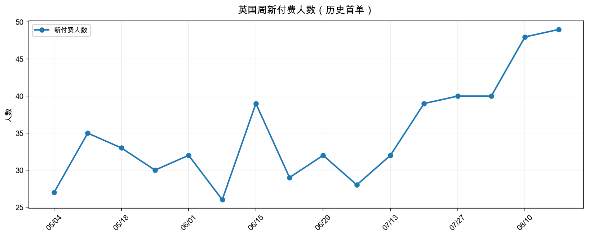
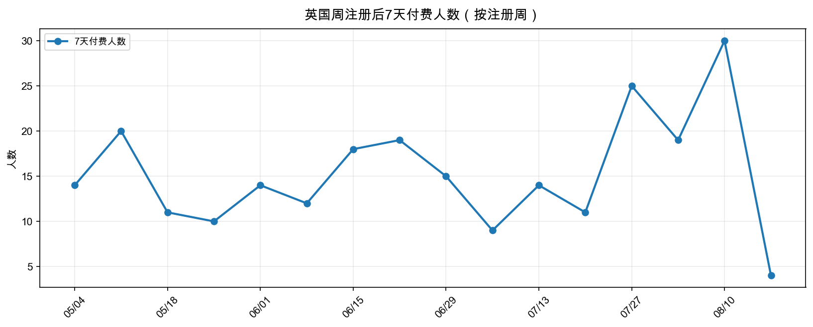
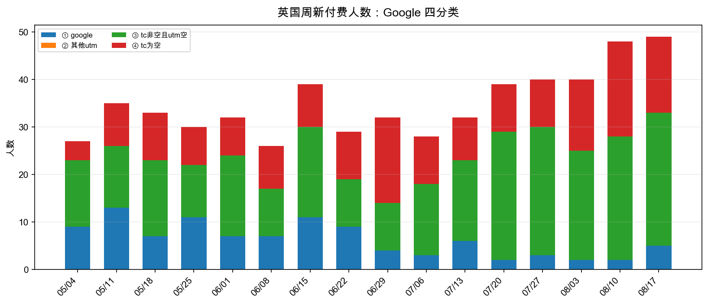
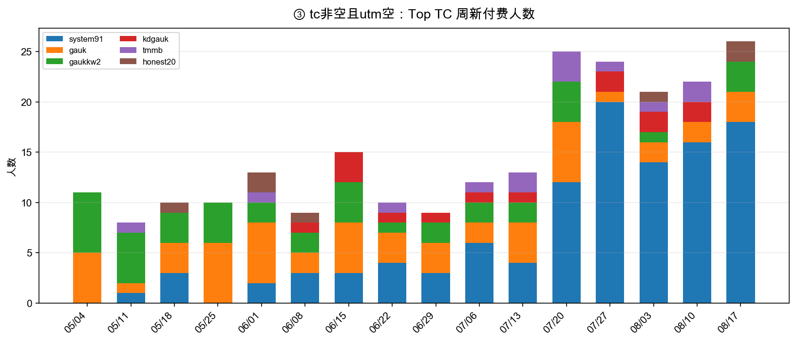
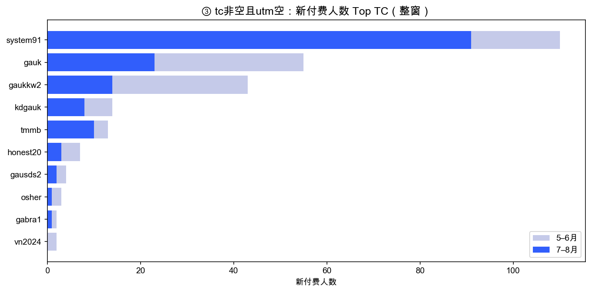

一句话回答：英国整体付费延续温和增长、老客托底；Google 注册与新付费继续收缩。③「tc非空且utm空」新付费明显抬升，核心由 tc=system91 在 7–8 月爆发驱动（整窗 110 人，其中 91 人出现在后半段）。
上篇 · 结论总结
① 整体付费（新老）
整窗（20260501–20260823）英国净付费约 211,546，订单 2792 笔；新付费人数 568，新付费金额 43,119（占 20.4%）；老付费金额 168,427（占 79.6%）。
相对 5–8 月前段，后半段周均付费金额与新付费人数仍呈温和上行，增长叙事仍是老客金额托底 + 新客首单慢爬。
② 新注册付费闭环
整窗注册 10654 人。成熟注册日（≤20260817）7 天付费率约 2.56%（252/9856）。
注册周趋势温和上行，但 7 天付费率未同步走强——不是「量质双升」，与上次结论一致。
③ Google 与四分类
| 四分类（新付费人数·整窗） | 人数 | 占比 |
|---|---|---|
| ① tc非空且 utm=google | 106 | 18.7% |
| ② tc非空且其他 utm | 0 | 0.0% |
| ③ tc非空且 utm 空 | 287 | 50.5% |
| ④ tc 为空 | 175 | 30.8% |
Google（①）周均新付费：前半约 9.2 人/周 → 后半约 3.4 人/周（持续收缩）。
③ 周均：前半约 13.8 → 后半约 21.6（明显抬升）；④ 前半 8.4 → 后半 13.5。
④ 新增：③ 类 tc 下钻（核心发现）
③「tc非空且utm空」整窗新付费 287 人。Top TC 如下（5–6 月 vs 7–8 月首单人数）：
| register_tc_code | 整窗人数 | 整窗金额 | 5–6月 | 7–8月 | 增减 | 判断 |
|---|---|---|---|---|---|---|
| system91 | 110 | 8533 | 19 | 91 | +72 | ↑关键 |
| gauk | 55 | 3844 | 32 | 23 | -9 | ↓ |
| gaukkw2 | 43 | 2509 | 29 | 14 | -15 | ↓ |
| kdgauk | 14 | 1763 | 6 | 8 | +2 | ↑ |
| tmmb | 13 | 1050 | 3 | 10 | +7 | ↑ |
| honest20 | 7 | 1553 | 4 | 3 | -1 | ↓ |
| gausds2 | 4 | 242 | 2 | 2 | +0 | ↑ |
| osher | 3 | 146 | 2 | 1 | -1 | ↓ |
| gabra1 | 2 | 220 | 1 | 1 | +0 | ↑ |
| vn2024 | 2 | 160 | 2 | 0 | -2 | ↓ |
关键结论：
- system91 是 ③ 类增长的绝对主力：整窗 110 人，其中 91 人首单出现在 7–8 月（5–6 月仅 19 人），后半段爆发。
- 早期较大的 gauk（55 人）、gaukkw2（43 人）整体在 7–8 月回落（32→23、29→14），不是本轮 ③ 抬升来源。
- tmmb、kdgauk 在后半段有增量（tmmb 3→10），但体量远小于 system91。
- ③ 上升不能简单等同于「utm 丢失的自然量」——至少 system91 这条 tc 有明确的后半段放量信号，建议投放/渠道侧核对 system91 对应活动或链接变更。
下篇 · 趋势图（周维度·完整周）
完整周区间：20260504（周一）至 20260817 所在周周日，共 16 周。
1. 注册


2. 付费日（新老）



3. 注册后 7 天付费

4. Google 四分类 & ③ tc 下钻



口径与限制
- 按付费日 vs 按注册日分开；rank_1 基于全历史净付费订单。
- 7 天窗口：成熟注册日 ≤ 20260817；08018–0823 注册不进完整 7 天结论。
- utm 表自 20260501 起较稳定；utm 空可能含归因缺失，但 system91 的 tc 级放量需单独核对。
- 周维度仅含完整自然周（周一至周日），首尾不足一周已剔除。